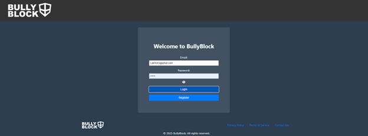
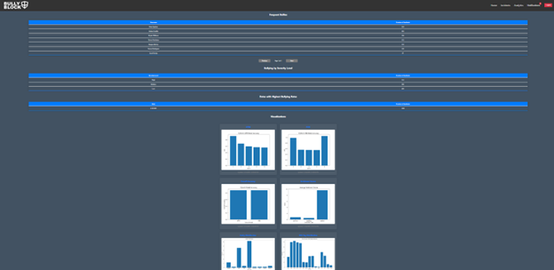

Task
BullyBlock automates the detection of cyberbullying incidents. Key tasks include:
- Text Analysis: Running real-time analysis on messages in Canvas LMS.
- Detection & Alerting: Identifying harmful messages and notifying staff.
- Review & Resolution: Allowing administrators to verify flagged messages.
- Trend Analysis: Generating reports to analyze cyberbullying patterns.
User Guides
How to Register a New Account
Step 1: Navigate to the BullyBlock web application.
Step 2: Click Register button
Step 3: Click on the "Select Role" button and select the Teacher or Admin role.
Step 4: Write in the Username, Email, and Password fields the details for the new account.
Step 5: Click Register button, should receive a verification message at the top of the screen saying "User registered successfully".
Step 6: Log in with the newly registered account.

How to Log In
Step 1: Navigate to the BullyBlock web application.
Step 2: In the Email field write a registered Email.
Step 3: In the Password field write the password for the registered Email.
Step 4: Click on the Login button.
How to Review a Flagged Incident
Step 1: Login In or Register
Step 2: From the Dashboard go to Incidents

Step 3: Click an incident to expand details
How to Mark Incident as Resolved
Step 1: Click on an incident to expand details.
Step 2: Click the "Mark as Resolved" button.
How to View the Analytics
Step 1: Login In or Register.
Step 2: From the Dashboard go to Analytics.
Step 3: Click on the "Next" button to view the next page of "Frequent Bullies".
